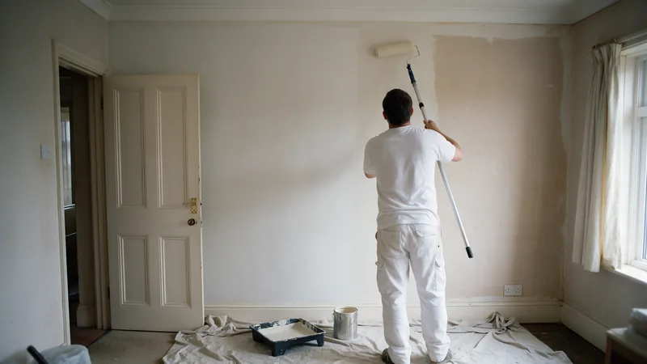
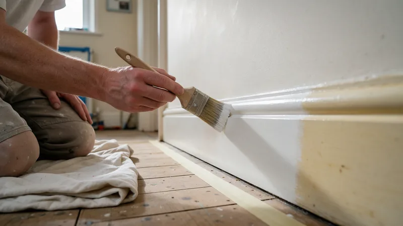

A different job to a family home
A house is about the finish. A rental between tenants is about the finish and the date, and the date is usually not movable. A flat that is empty for four days has to be done in four days, and everybody involved needs to know what is realistically possible in that time rather than finding out on the Thursday.
So these jobs get planned backwards from the handover. What is getting done, what is getting touched up, what is being left, and which day the keys go back. Plain colours throughout and an empty flat are what make a short window work. Four shades and a feature wall do not, and we will say so before you book it rather than after.
Offices, salons and anywhere that trades
The question here is never really the painting, it is when. Most of this work happens round the edges of the week: an evening, a weekend, a shutdown, a quiet fortnight. Water based paint helps a lot, because the smell goes with the night rather than hanging about on Monday morning.
What matters is leaving it so the place can open. Everything back where it was, nothing taped up, no sheets left down, floors clean and the dust off the surfaces rather than drifting onto a desk on Monday. A job that is technically finished but leaves somebody an hour of tidying is not finished.
Landlords and agents
If you look after more than one property, the thing that saves the most money over a few years is not the cheapest quote, it is keeping the same specification: the same white on the walls, the same finish on the woodwork, in every flat. Then a scuffed wall in two years is one wall touched in, not a whole room repainted because nobody can match it.
We would keep a written record of exactly what went where, so the next visit is a touch up instead of a redecoration. On a real site this page is where that offer sits, with a simple way to send photographs through from a phone and get a straight answer back.
 Generated photo
Generated photoGenerated for this demo. Not a photograph of a real job.
 Generated photo
Generated photoAn empty room, sheeted and set up. This is the single biggest thing that decides whether a short window works.
On the job
How this one usually goes.
- Plan backwards from the handover dateThe date the keys go back decides everything. What gets done, what gets touched up, what gets left, agreed in writing before anybody turns up.
- Get in while it is emptyFurniture out, carpets lifted or protected, and the flat properly empty. Working round what is left is the single biggest thing that turns four days into six.
- Make good, honestlyHoles, scuffs, picture hooks and the odd bit of damage filled and sanded. Anything that is damp, broken or coming off is reported rather than painted over.
- One specification throughoutThe same white on the walls, the same finish on the woodwork, written down. Next time it is a touch up rather than a full repaint, in this flat and every other one.
- Cleared and ready to photographSheets up, floors swept and the dust off, nothing taped up, nothing left behind. Walk round it together and sign it off.
A sample running order for this demo. Yours depends on the property and what the surfaces turn out to be doing.
Questions
Asked about this job.
Can you work evenings and weekends?
For commercial work that is usually how it goes, and we would rather plan for it than squeeze into a trading day. Water based paint makes it much easier, because the smell goes overnight rather than lingering into Monday.
How fast can a flat be turned round?
It depends entirely on the size, the condition and whether it is empty, and we will not put a number on a web page because any number here would be made up. Tell us the flat and the date and you will get a yes or a no.
Do you do touch ups rather than full repaints?
Yes, and for a landlord it is usually the right answer. It only works if the original specification was written down and the same paint goes back on, which is exactly why we keep a record of what went where.
Can you work from photographs?
For a quote on an empty flat, often yes, with a clear set of photographs from every corner of each room and a note of anything we would not see. We would still want a proper look before starting, and anything we find then gets raised before it gets painted.
Do you take furniture out?
We will move what is sensible within the property. Clearing a flat out is a removals job rather than ours, and it is far better done before we arrive, because an empty flat is the thing that makes a short window possible at all.
General trade knowledge written for this demo, not advice on your property.
Our work
Sample jobs like this.
Generated photoA flat turned round between tenantsFleetwood · Sample
Generated photoLaying off a long wallPoulton-le-Fylde · Sample
Generated photoA long run of skirtingThornton-Cleveleys · SampleMade up samples with generated pictures. Tap one for the detail.
Also
The other things we do.
Interior painting
Walls, ceilings and the bits either side of them. Filled, caulked, sanded and dusted off before a drop of paint goes on, then laid off properly.
More →Exterior painting
Render, pebbledash and masonry out front, and the timber that holds it all together. Done in the right months, on a dry wall, in the right order.
More →Wallpaper hanging
One feature wall or a whole room. Lining where the wall needs it, plumbed off a line rather than off the corner, and patterns matched at every seam.
More →Woodwork and doors
Skirtings, architraves, window boards, spindles and doors. Sanded flat, knotted and primed where it is bare, then brushed so you cannot find the laps.
More →Kitchen cabinet painting
Doors off, degreased, keyed, primed for the surface they actually are, then two thin coats. A new looking kitchen without a new kitchen.
More →Shall somebody come and look at it?
Tell us which rooms and your postcode. Twenty minutes with a light held along the wall tells us more than any photograph.